高溢价的“快速模式”证明用户愿意为更低延迟和更快token付费，可能带来更高毛利率。OpenAI等前沿AI实验室因此正在评估专用推理系统，包括Cerebras和NVIDIA Groq LPU，它们优先考虑超高交互性而非最大批量吞吐。超低延迟在交互式工作负载中最为重要，包括实时助手和全双工语音。例如，OpenAI GPT‑Live可以同时听和说，使用户能立即感知响应延迟，被描述为感觉像Ironman JARVIS。
GPU在高吞吐和中低交互性方面表现极为出色，但其架构不太适合超低延迟推理。一台8-GPU HGX B200服务器理论上可提供总计64 TB/s的HBM内存带宽。在batch size 1下，GLM-5在NVFP4下每个生成的token仅需约21 GB的活动参数流量。因此，B200 HBM带宽roofline表明，在不使用投机解码的情况下，每个用户可达3,047 tokens/s。实际上，GPU远未接近这一极限。
差距来自延迟而非带宽。传统GPU编程模型会启动并同步许多单独的内核，其setup和teardown开销在超高交互性下变得显著。虽然这些延迟成本在常规服务速度下不太明显，即使使用CUDA graphs，当token延迟接近亚毫秒级每输出token时间（TPOT）范围时，它们也会占据主导。此外，尽管GPU内存带宽每代大约增加2–3倍，但内存延迟却完全没有改善。
虽然使用替代硬件很流行，但也有办法让GPU实现这一点。TileRT的持久引擎正是为此而生。TileRT在NVIDIA GPU上将整个decode图静态编译为单个持久内核，最大化计算、内存读写和通信之间的重叠。在单台B200 decode服务器上的InferenceX GLM5 FP8 744B基准测试中，tileRT已验证可达500 tokens/s/user，比运行传统推理引擎的GB300 NVL72快约3倍。按每个输出token的等成本计算，TileRT实现交互性的速度可达传统引擎的2倍。
我们感谢TileRT维护者在TileRT InferenceX基准测试上的合作，也感谢vLLM社区在V1 connector上的出色设计。TileRT来自同一个社区维护者组织，该组织还构建了广受欢迎的TileLang DSL。
通过PD分离推断技术，超专业的TileRT引擎处理对延迟敏感的decode，而vLLM和SGLang等吞吐优化引擎继续服务于prefill。TileRT decode引擎已在小米生产环境中部署，用于MiMo V2.5 Pro UltraSpeed和ZAI的GLM 5.1 HighSpeed。
深度探讨TileRT InferenceX结果、TileRT是什么、它如何与现有推理生态系统组合，以及TileRT的权衡与挑战。
我们还将阐述在标准GPU上使用TileRT与NVIDIA Groq LPU、Cerebras和Sambanova等超低延迟专用芯片之间的权衡，并评估在GPU上运行的TileRT软件是否有潜力颠覆这些专用芯片的TAM。SemiAnalysis Accelerator Model每季度提供NVIDIA LPU30、LPU40、Cerebras WSE-3和WSE-4出货量的估算，以及更多内容。
InferenceX是我们的开源、厂商中立、持续更新的AI推理基准测试与研究平台。我们沿着延迟-吞吐Pareto前沿评测领先模型、推理框架和硬件，追踪真实推理性能与经济性如何随时间改善。
我们的基准测试已被几乎所有主要算力买家广泛复现、验证和/或支持，从Google Cloud、Microsoft Azure、Oracle到Meta等众多企业。此外，它获得了ML社区的支持，包括vLLM、LMCache、SGLang、PyTorch、Huggingface，也获得了OpenAI、MiniMax、ZAI、Qwen、Moonshot Kimi等主要实验室的支持。
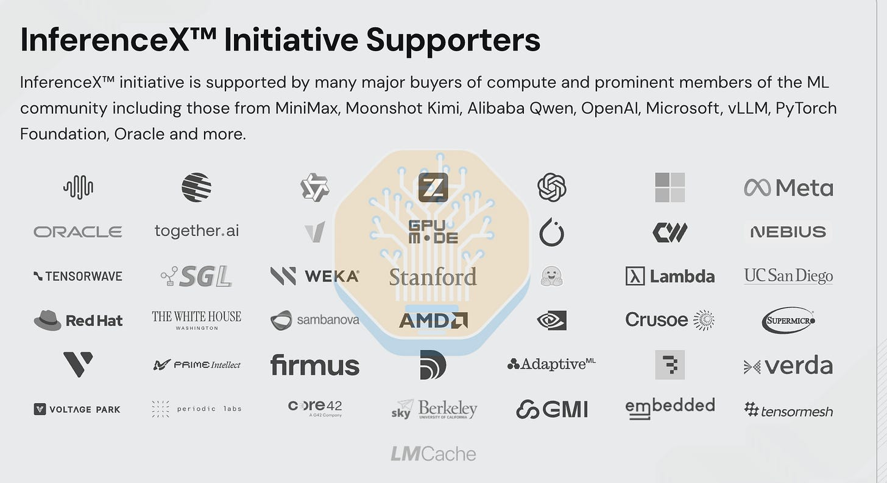
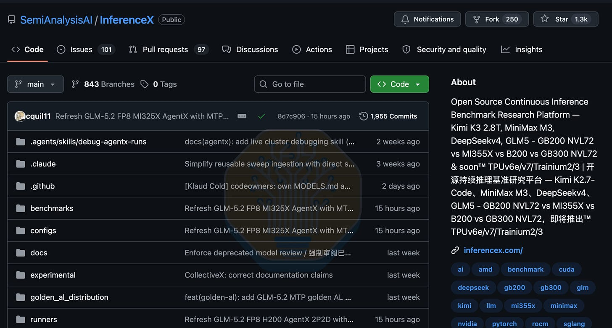
每个推理系统都必须在两个相互竞争的目标之间取得平衡。
交互性（tok/s/user）衡量单个用户接收token的速度，即每个输出token时间（TPOT）的倒数。它决定了响应是敏捷还是迟缓。
吞吐量（tok/s/GPU）衡量系统在所有用户间产生的token总数。它在很大程度上决定了每个token的成本。
批处理通过将更多请求一起处理来提高总吞吐量，但每个用户通常需要为每个token等待更长时间。小批量则相反：它们提高每用户速度，同时减少每个GPU在总体上完成的有用工作量。
引言
公交车将成本分摊到众多乘客身上，但让每位乘客在共享站点等待。赛车只载一两人，能更快抵达目的地，但每位乘客的成本要高得多。推理也有同样的权衡：批处理可提高总体吞吐量并降低每token成本，而小批次可提高每位用户的响应速度。不存在普遍适用的运行点。
在如下所示的配置中，将交互性从大约25提高到260 tokens/s/user，会使单GPU吞吐量从约5,900降至200 tokens/s/GPU。这相当于总吞吐量约为原来的1/30，而每用户速度提高了10倍。
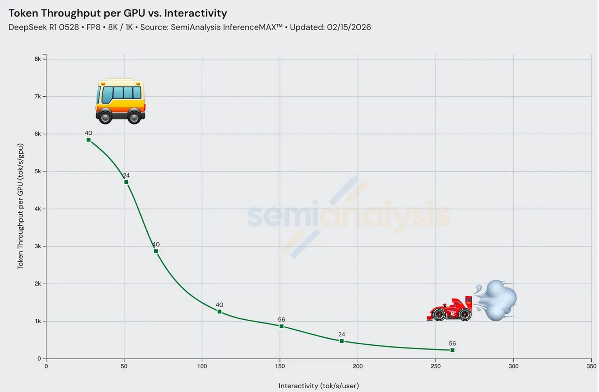
GPU在高吞吐量场景下已表现出色，但在高交互性场景下表现不佳。这一弱点催生了数据流芯片的整个细分市场。TileRT针对的正是这一弱点，因此只专注于高交互性运行点。
TileRT在B200上独树一帜。在8k/1k输入/输出token场景下，TileRT在八GPU B200节点上达到了340 tokens/s/user。当前数据集中的此前最高结果是GB300 NVL72在NVFP4和MTP下的181.4 tokens/s/user，使TileRT在这项指标上快1.9倍。当然：这是在批大小为1的情况下，此时GB300 NVL72为搭建复杂铜背板所付出的额外功夫在提升交互性方面完全派不上用场。
同时，在B300上使用MTP的最快FP8结果为113.6 tokens/s/user，使得TileRT在相同精度下快3.0倍。
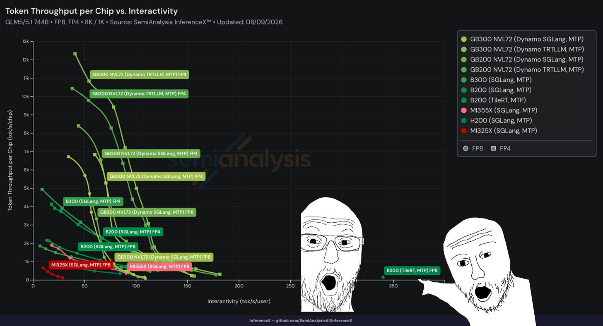
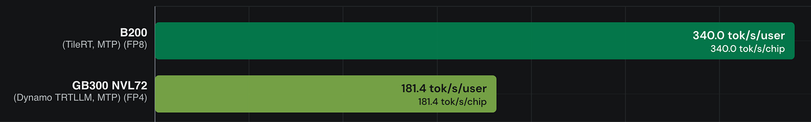
在1k/1k输入/输出下，TileRT FP8达到494.2 tokens/s/user，是使用FP4的最佳常规结果（256.3 tokens/s/user）的1.9倍，是FP8最佳常规结果（136.3 tokens/s/user）的3.6倍。TileRT尚不支持FP4，但已超越非TileRT的FP4实现。该结果之所以显著，是因为它来自八GPU B200节点，而非GB200或GB300 NVL72的72-GPU NVLink横向扩展域。该比较关注每用户交互性，而非聚合吞吐或成本。
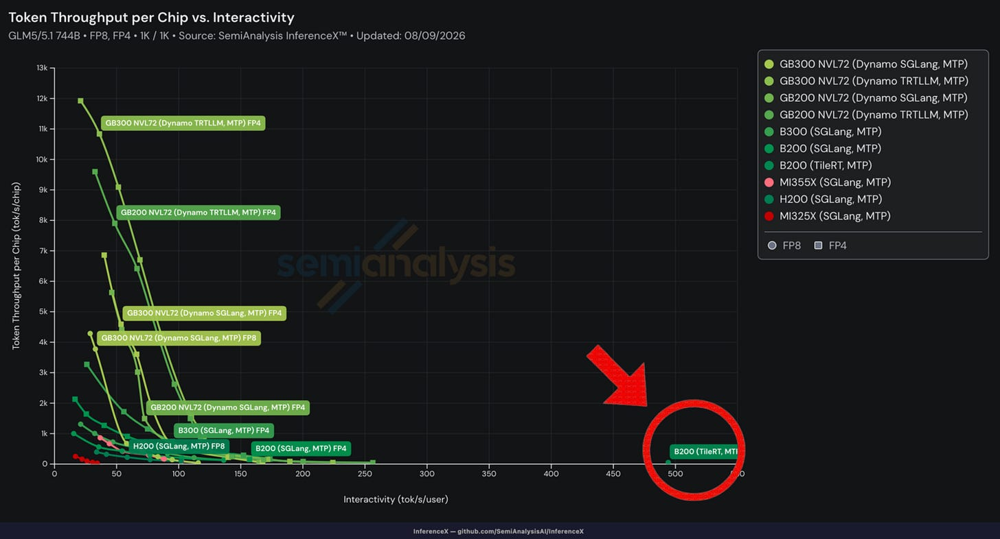
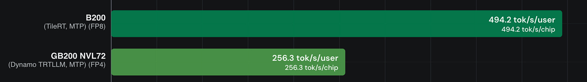
然而：推理总是存在权衡取舍！TileRT的交互性优势伴随着较低的聚合吞吐。随着并发度上升，传统引擎可以将权重加载和固定内核成本分摊给更多用户。在8K/1K输入/输出下，并发度为12时，GB300 FP4+MTP提供约240 total tokens/s/GPU，同时保持154 tokens/s/user。TileRT提供160.4 total tokens/s/GPU，同时达到340 tokens/s/user。
因此，权衡在于：TileRT提供更高的每用户速度，但常规GB300方案在每GPU上完成更多聚合工作。截至发布时，TileRT每个解码节点仅服务一个在途请求，使其成为刻意特化的运行点，而非通用吞吐配置。因此，由于仅支持批次大小为1的用户，TileRT不只是赛车，更像是一艘只载一名乘客的私人火箭飞船。让TileRT支持更多乘客或许可行，但这是一个雄心勃勃的目标。
在端到端延迟方面，FP8下的TileRT在1k/1k上比此前最佳GLM-5.1结果快4.5倍，在8k/1k上快3.0倍。正如预期，TileRT的首令牌时间（TTFT）表现良好但并不突出。决定性优势来自解码尾部：3.01秒，而最佳NVFP4 + MTP竞品为6.54秒，MI355X为18.18秒。
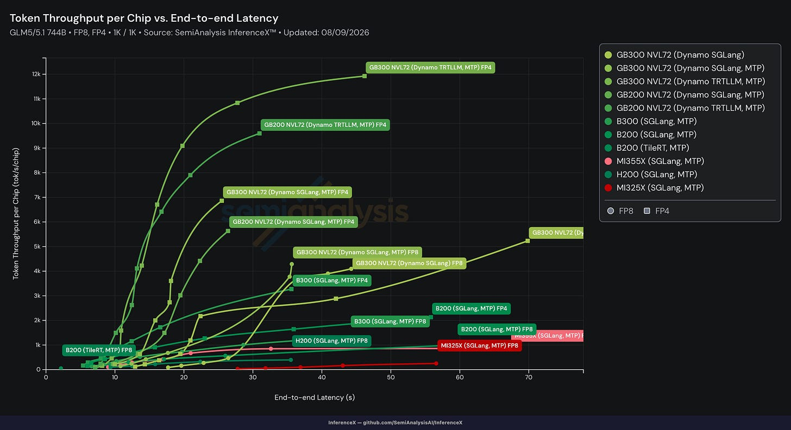
我们简要介绍了TileRT的用途并展示了一些基准测试结果，现在更深入地说明TileRT是什么以及它如何工作。传统推理服务引擎以数千个独立GPU程序内核的形式运行，逐个依次启动。所有这些启动与销毁过程意味着GPU有大量时间都在等待；这种启动/销毁时间对于低到中等交互性推理或许无关紧要，但对于超高交互性推理（即低延迟推理）则至关重要。更糟的是，每个内核都会把未完成的中间结果写回HBM。在小batch size下，问题更为突出，因为内核规模不足以摊薄启动延迟、同步和调度开销。
TileRT以batch size 1运行时，仅一台HGX H200服务器（聚合HBM内存带宽38.4TB/s），在MXFP8下每个token的活跃参数内存带宽就达到42GB。理论上，如果仅受内存带宽限制，即使没有spec decoding，推理也能达到高达1,000 tok/s/user的交互性能。但现实世界显然不是如此！障碍在于GPU的编程与架构模型传统上就不是为低延迟设计的。尽管每代GPU的内存带宽提升2-3倍，内存延迟却毫无改善，而HBM价格还在持续上涨！
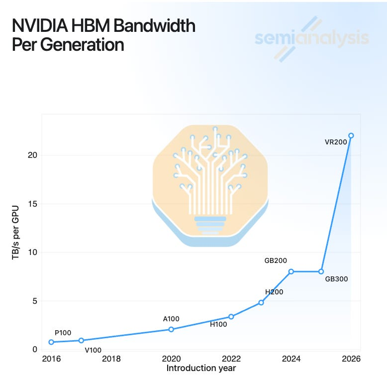
TileRT不再持续启动内核，而是让GPU持续执行一个持久化流水线，将整个模型提前静态编译为一个持久化的Engine Kernel（引擎内核）：host只启动一次，执行在整个decode生命周期内常驻GPU，大部分运行时编排被前移到编译期。
这与CUDA graph不同。CUDA graph一次性捕获内核启动和memcpy的DAG（有向无环图），然后通过单次cudaGraphLaunch重放。但内核本身仍然是独立的内核，内核之间的边界会带来设备端开销，且每次跨越边界都会清空片上状态。CUDA graph优化的是内核的启动方式，而TileRT则废除了内核这一执行单元。
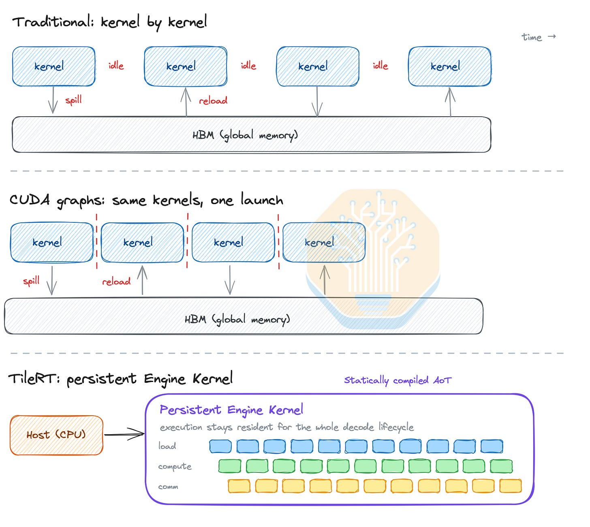
此外，通过将工作分解为tile级任务并采用warp与block特化，运行时以高度重叠的方式动态重排计算、I/O与通信。在Engine Kernel内部，不同warp group承担不同职责：异步数据搬运、张量计算与通信相互重叠。原先各阶段以load → barrier → compute → barrier方式串行执行，现在则以tile为粒度重叠进行，中间结果通过寄存器、共享内存和L2向前流动，而不再反复溢出到全局内存。实际上，每个CTA（Cooperative Thread Array，协作线程数组）都变成一个小型异构工厂，而不再是统一的SIMT（Single Instruction Multiple Threads，单指令多线程）工作单元。
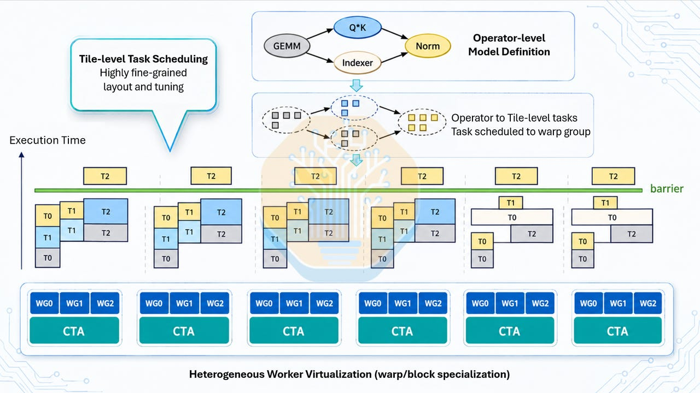
TileRT引入的下一项优化是将特化扩展到整个GPU。大多数TP框架假设所有rank同步执行相同逻辑，但稀疏路由、Top-K选择、动态索引、长上下文注意力和MTP并不适合同构横向扩展；它们计算量不大，却依赖全局信息，因此强制每个rank都执行这些操作会带来冗余工作和同步放大。既然warp可以特化，GPU同样可以。在GLM-5.1的注意力层中，GPU 0成为Sparse Indexer worker，负责Top-K选择、稀疏索引构建与路由；GPU 1到7运行MLA worker，执行RMSNorm、GEMM、flash sparse attention和AllReduce。
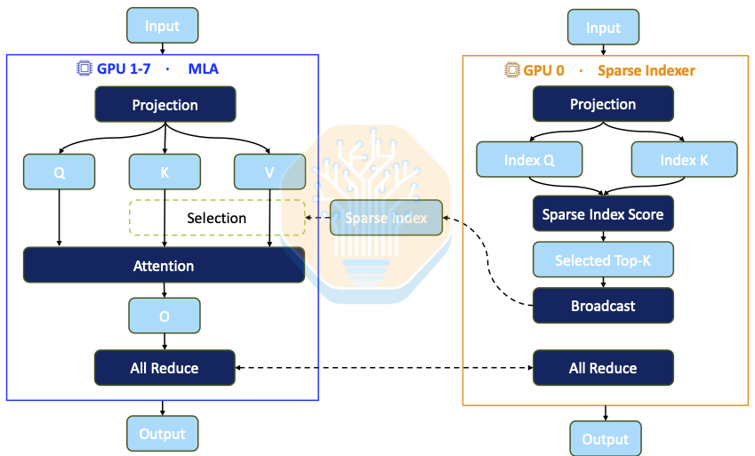
最后，TileRT不再将通信视为外部阶段，broadcast、reduction与同步直接在tile级流程内部执行；在TileRT中，整个注意力层在host端仅对应一次内核启动，执行模式从compute → sync → compute转向持续重叠的compute ↔ communication ↔ compute流水线。
LLM推理包含两个不同的阶段：预填充（prefill）和解码（decode）。预填充并行处理输入提示词，主要属于计算密集型，因此聚合吞吐量是关键性能指标。解码顺序生成token，并反复访问不断增长的KV缓存，因此属于内存密集型，且对每个token的延迟高度敏感。
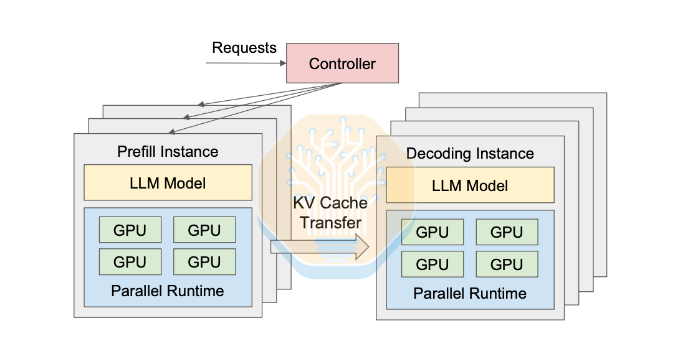
TileRT并不取代vLLM；vLLM仍然是高吞吐预填充引擎以及周边服务层，包括其调度器、分块预填充、前缀缓存、OpenAI兼容API和运维工具。只有延迟关键的解码流量会迁移到TileRT。TileRT被设计为一艘单客火箭，而vLLM仍是飞机、汽车、公交车和火车。
预填充和解码阶段可以拆分到不同节点。通过拆分，一个共享的vLLM预填充池可以供给两个完全不同的解码池。
池A：使用TileRT的超高互动性解码
延迟关键型请求经过TileRT PD Router，它会指示vLLM生成第一个token，并在kv_transfer_params中用目标TileRT节点标记该请求。
池B：使用vLLM解码的常规低到中互动性解码
常规流量继续通过vLLM原生拆分代理进入常规vLLM解码池。
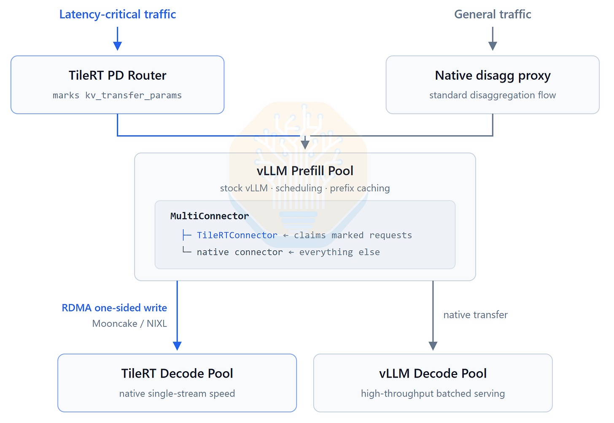
这是通过vLLM的MultiConnector API将TileRTConnector与其原生连接器组合实现的。TileRT connector只认领被标记为高互动性流量类的请求，对其他一切请求则成为空操作，这意味着两种流量类可以共享同一个预填充服务器。在预填充和解码之间，TileRT使用Mooncake Transfer Engine和NIXL Transfer Engine移动KVCache。在TileRT v0.1.5中，每个解码节点一次只服务一个正在处理的请求。当节点被占用时，路由器会控制调度并施加背压。
专用推理供应商多年前就发现了同样的执行瓶颈，但把更多解决方案固化进了硬件。SemiAnalysis加速器模型给出了我们对NVIDIA LPU30、LPU40、Cerebras WSE-3与WSE-4出货量的逐季度估算。
Groq采用确定性、编译器编排的执行方式和大规模片上SRAM层级。Cerebras将计算以空间方式映射到晶圆级处理器上；CS‑3提供约90万个核心、44 GB片上SRAM和21 PB/s内存带宽。SambaNova将模型图映射到可重构数据流单元上，并以分层的SRAM、HBM和DDR内存系统作为支撑。
芯片各不相同，但系统理念一致：延迟敏感型推理受益于减少运行时调度、算子边界、同步以及不必要的外部内存搬运。在大batch size下，这些成本更容易摊薄；在batch size为1时，它们在每个token延迟中的占比要大得多。
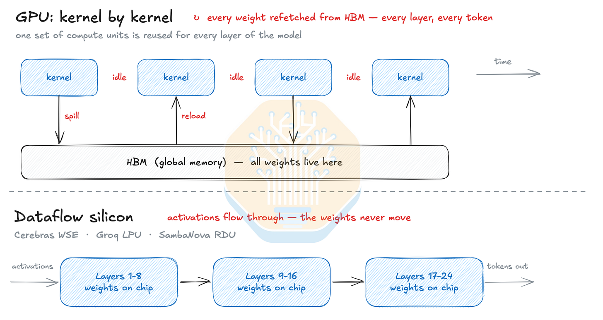
TileRT引入了多种数据流理念的软件对应物：AoT调度、持久执行、专用worker，以及通信与计算之间更紧密的重叠。这种相似体现在架构层面，而非字面层面。TileRT仍然运行在SIMT GPU上，具备动态硬件调度、HBM和模型特定的编译调度方案。
然而，TileRT仍然只是软件：数据流被强加在一台从未专门为其设计的机器上。GPU搭载动态warp调度器、SIMT模型和HBM层级，而TileRT取得性能数字的方式，是投入巨大编译器工作量，让那台机器通过静态展开的持久kernel、手工雕琢的warp特化，以及针对固定驱动栈的逐模型编译，来模仿一条空间流水线。原生数据流芯片从不与自己的底层硬件对抗。专用加速器把更多执行模型固化在硬件中，可以避免一部分TileRT必须用软件隐藏的开销。它们的优势仍然取决于模型、精度、内存层级、编译器质量、系统规模和部署配置。这正是Cerebras能以任何八GPU节点无论怎样调度都无法达到的速度服务稠密70B模型的原因：软件可以逼近HBM性能上限（roofline），但无法抬高它。
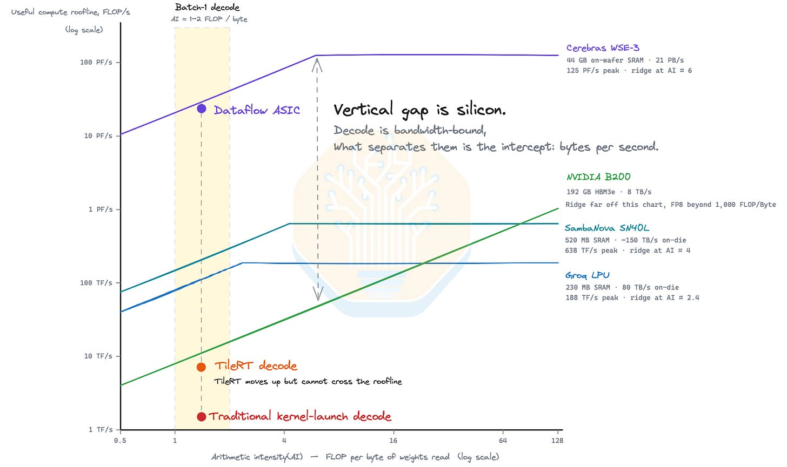
市场早期的答案是：纯度是可以商量的。TileRT的解码引擎已经投入生产，支撑着小米的MiMo V2.5 Pro UltraSpeed和Z.ai的GLM-5.1 HighSpeed，部署模式即是明证。两家公司都没有采购新的数据流芯片。它们从自己已在运行的加速器集群中切出了一个速度档位：vLLM继续负责prefill、调度和API，而TileRT在同一端点背后接管decode。在已拥有的硬件上做到足够好，往往胜过在必须购买的硬件上做到架构纯粹。
这指向更深层的结构性问题：prefill-decode（PD）比例的可互换性和灵活性。
GPU池是一种弹性资源，擅长prefill，擅长高到中批量decode，现在在超高交互decode方面也有一定可信度，容量在这些角色之间移动是软件调度器的决策，可逐小时跟随需求。ASIC机群则相反：速度层级容量与其他一切的比例在采购订单签署之日就在硬件中固定了。改变物理机群的比例需要数月时间来物理重新上架和重新布线。如果工作负载构成稳定且已知，那没问题。不幸的是，在估算时，需要普通对话延迟的用户与日益增加的、愿意为极端交互性SLO付费的agent（智能体）用户之间的划分涉及许多不同变量。GPU猜错了可通过软件重新平衡。专用芯片猜错了，要么将资本困在闲置的速度机器中，要么拒绝正是你为之购买的优质流量。此外，需求可能随时间变化，所以正确的猜测也只在一段时间内正确。
回到前面提到的共享prefill池，提供商无需为所有流量支付TileRT溢价。普通请求可以留在吞吐优化的vLLM或SGLang decode池中，只有延迟关键的请求才路由到TileRT decode池。
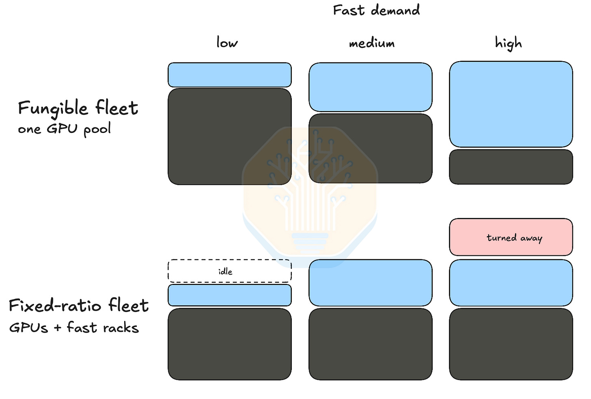
这些都不会终结速度市场的顶端。SRAM roofline仍然更好，某些尺寸的模型仍然偏好它，而且一些工作负载总会不惜代价追求最大每秒token数。但TileRT重新定义了大数买家的需求：不是一台速度机器，而是一个速度层级，从他们本来就要拥有的机群中动态配置。Cerebras、Groq和SambaNova不再与笨拙的内核启动器竞争。它们正在与自己的执行模型竞争，该模型运行在通用硬件上，可通过配置文件重新分配。TileRT可能是一艘单座火箭飞船，但它允许提供商将固体火箭助推器绑在你的Metro Bus上，而不必设计一款全新的运载火箭。
GLM5.1落后一代，并且已在线主线InferenceX上被弃用。TileRT的模型目录非常有限，目前支持GLM-5/5.1、DeepSeek-V3.2。MiMo-V2.5-Pro-UltraSpeed是协同设计合作的成果，尚未开源。
TileRT继承了ASIC供应商最大的弱点。静态预先编译意味着极小的模型目录（目前为GLM-5/5.1和DeepSeek-V3.2）、硬性固定的依赖关系，以及每种新架构都需要大量实际工程。没有完全通用的路径，持久性引擎内核意味着模型被静态地预先展开为一个驻留程序，因此必须对tile形状、流水线深度、跨寄存器/共享内存/L2的缓冲区驻留、warp组如何在加载、计算和通信之间划分、collective在何处融合到tile流中，以及哪些GPU承担诸如GLM-5.1专用稀疏索引器rank等特殊角色做出决策。更改注意力机制或路由方案，很大一部分调度就会失效。数据流芯片也面临同样的问题，好的编译器以难做而闻名。
相关工作正在进行，以简化这一过程，尤其是在AI能够加速软件开发的情况下。TileOPs旨在减轻这一负担。每个算子都在机器可读的manifest中声明，其中规定了其签名、工作负载和Roofline模型。该manifest驱动代码生成、测试以及与硬件上限（而非仅与先前实现）的基准对比。
AI编码智能体可以加速已知模板内的调优，但全新的变换仍需要专家判断。单体持久化内核也会降低传统逐内核性能分析时间轴的可用性，使自动化反馈循环更加困难。
我们正积极将TileRT基准测试从InferenceX的单轮8k/1k场景迁移到我们新的Agentic（智能体原生）编码基准测试，我们称之为AgentX。该场景会重放真实的Claude Code和Codex轨迹，包含长上下文、多轮请求、真实的子智能体活动以及动态工具使用延迟。其中位输入长度为140k tokens，而理论上中位缓存命中率上限达到99.2%。
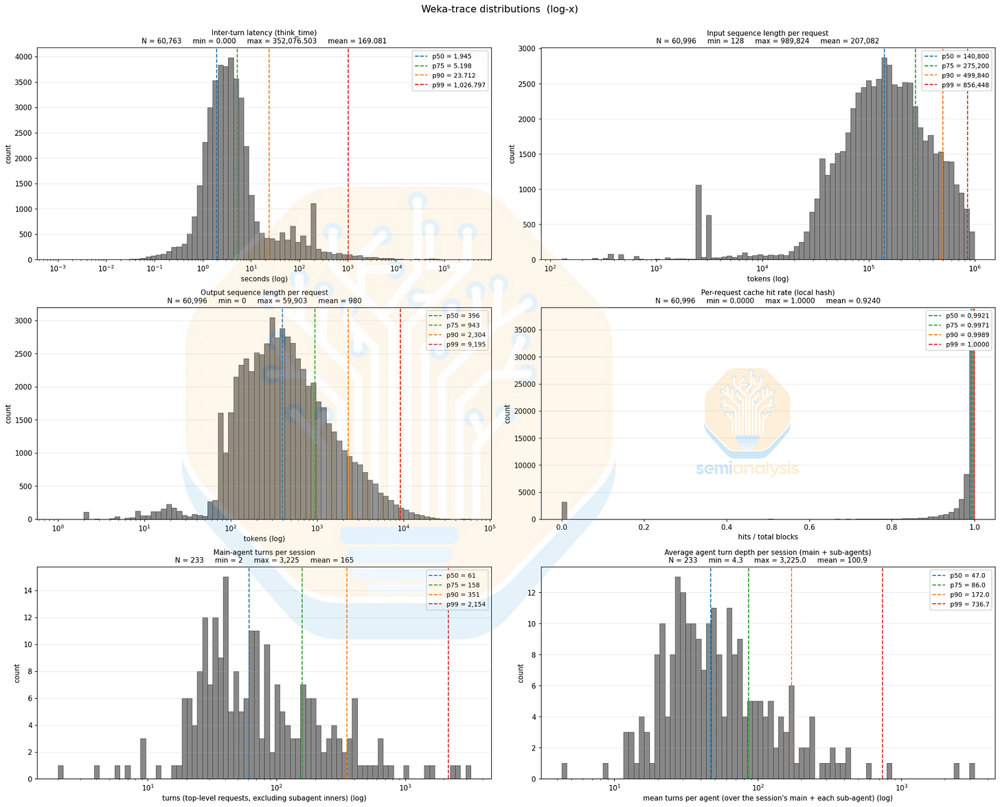
这一工作负载将测试整个TileRT<> vLLM系统，而不仅仅是解码速度，包括增量KV传输、前缀缓存复用、缓存保留与卸载、路由和调度。关键问题是，TileRT能否在保持超高交互性优势的同时，仅传输各轮之间新增的上下文。
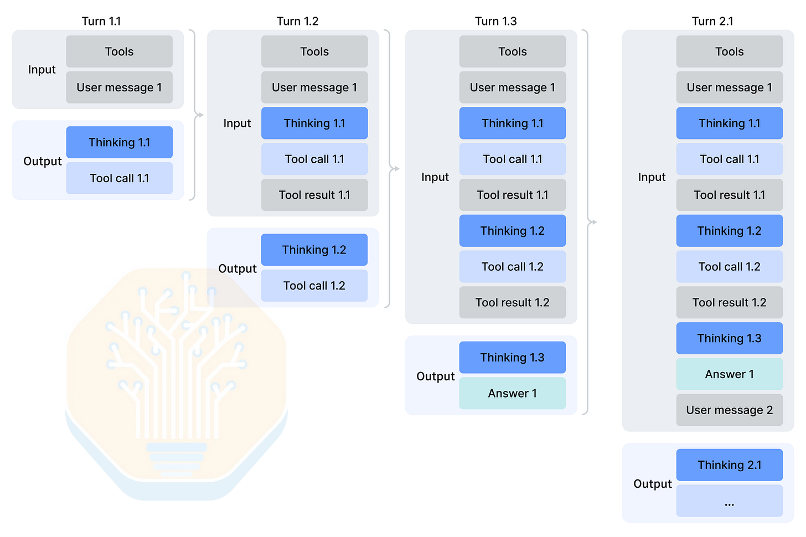
第二步是突破仅限批大小1的局限。我们还将在批大小2、4、8下对TileRT进行基准测试。目标是描绘其吞吐–交互性Pareto前沿，并找出持久化Engine Kernel延迟优势开始趋于平缓的点。
我们对TileRT在超高交互性下每百万输出tokens的成本进行了深入研究，并与正常较低交互性工作点下的解码成本进行了对比。在与传统引擎同等成本下，TileRT的交互速度最高可提升1.9倍。我们使用自己的AI TCO模型作为每种芯片SKU的资本支出与运营支出基线。
参考：https://newsletter.semianalysis.com/p/ultra-high-interactivity-on-nvidia